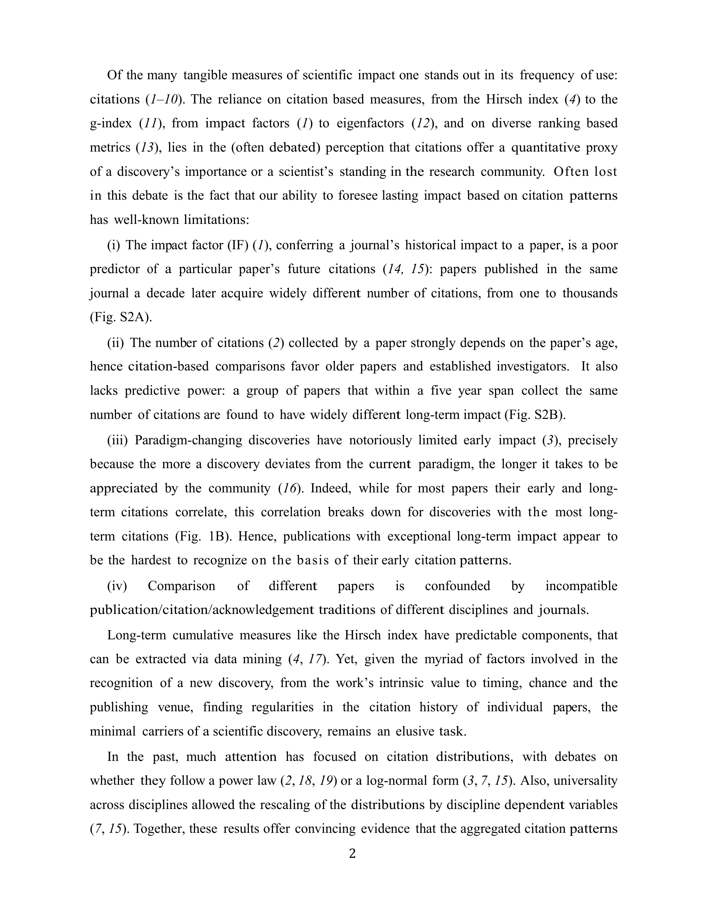

저자: Dashun Wang, Chaoming Song, Albert-László Barabási | 날짜: 2013 | Journal: Science | DOI: 10.1126/science.1237825" target="_blank">10.1126/science.1237825 | arXiv: N/A

Figure 1
논문의 장기 인용 영향력은 'sleeping beauty(수면 후 각성)' 현상을 포함하여 단순 지수 감소가 아닌 복잡한 패턴을 보인다. Wang et al.(2013)은 Physical Review 저널의 30만 편 논문 인용 시계열을 분석해, 대부분의 논문은 발표 직후 인용이 증가했다 감소하는 패턴을 보이지만, 일부는 오랜 잠복기 후 급격히 각성하는 sleeping beauty 패턴을 보임을 확인했다. 이들은 이를 $c(t) = m(e^{\mu t}-1) + \eta$ 모델로 정량화했다.
Figure 1
Figure 1: 논문 핵심 결과 또는 방법론 개요
총평: 30만 편 논문의 인용 시계열을 3-파라미터 모델로 정량화하여 sleeping beauty 패턴을 포함한 과학적 영향력의 장기 역학을 체계적으로 분석한 계량과학 연구다.